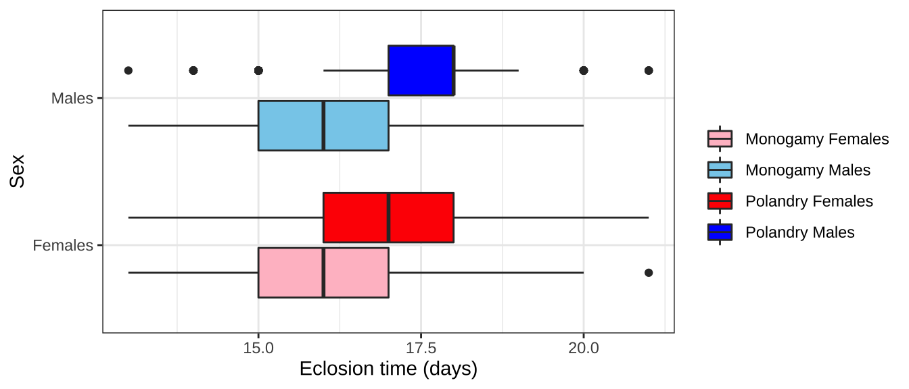
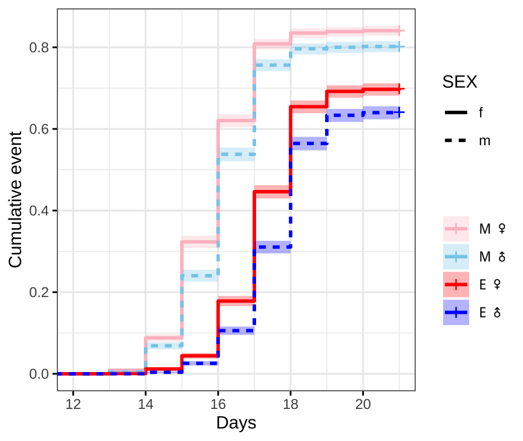
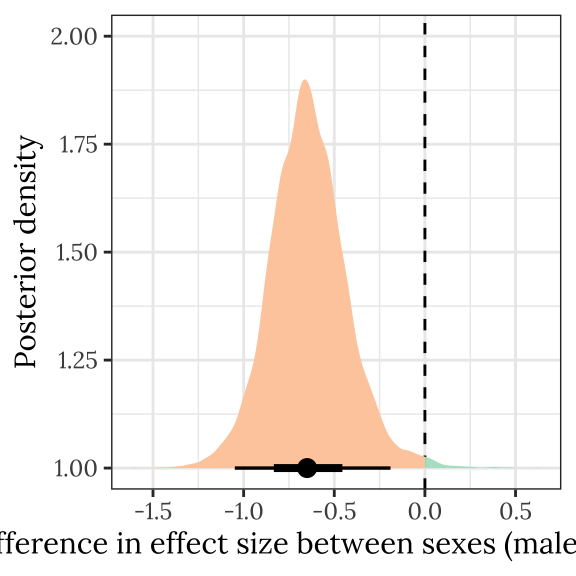
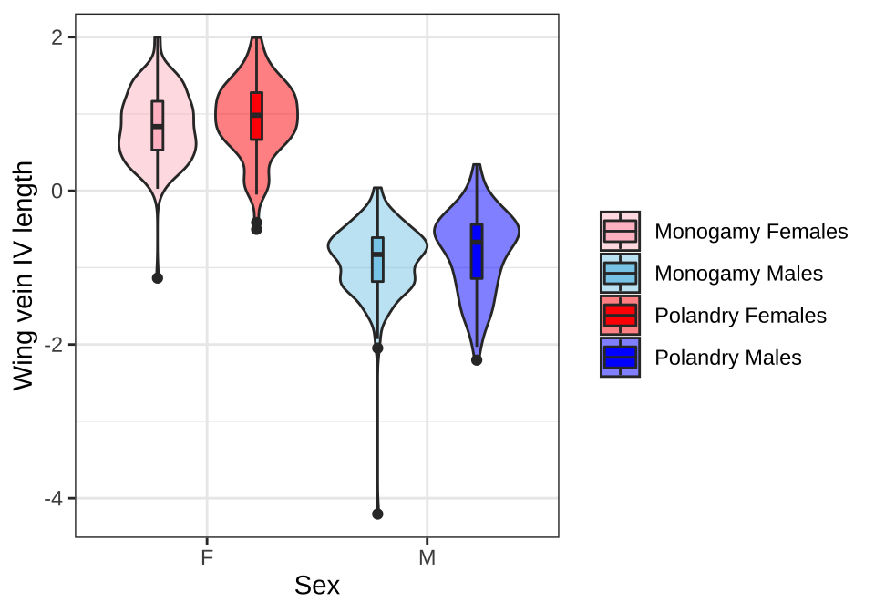
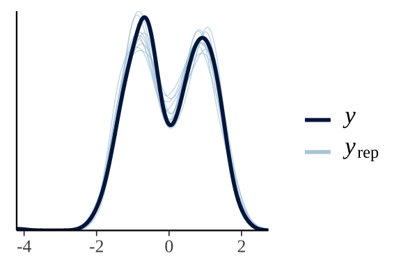

Juvenile development time
Last updated: 2021-10-05
Checks: 7 0
Knit directory: exp_evol_respiration/
This reproducible R Markdown analysis was created with workflowr (version 1.6.2). The Checks tab describes the reproducibility checks that were applied when the results were created. The Past versions tab lists the development history.
Great! Since the R Markdown file has been committed to the Git repository, you know the exact version of the code that produced these results.
Great job! The global environment was empty. Objects defined in the global environment can affect the analysis in your R Markdown file in unknown ways. For reproduciblity it’s best to always run the code in an empty environment.
The command set.seed(20190703) was run prior to running the code in the R Markdown file. Setting a seed ensures that any results that rely on randomness, e.g. subsampling or permutations, are reproducible.
Great job! Recording the operating system, R version, and package versions is critical for reproducibility.
Nice! There were no cached chunks for this analysis, so you can be confident that you successfully produced the results during this run.
Great job! Using relative paths to the files within your workflowr project makes it easier to run your code on other machines.
Great! You are using Git for version control. Tracking code development and connecting the code version to the results is critical for reproducibility.
The results in this page were generated with repository version 1c2e52c. See the Past versions tab to see a history of the changes made to the R Markdown and HTML files.
Note that you need to be careful to ensure that all relevant files for the analysis have been committed to Git prior to generating the results (you can use wflow_publish or wflow_git_commit). workflowr only checks the R Markdown file, but you know if there are other scripts or data files that it depends on. Below is the status of the Git repository when the results were generated:
Ignored files:
Ignored: .DS_Store
Ignored: .Rhistory
Ignored: .Rproj.user/
Ignored: data/.DS_Store
Ignored: figures/.DS_Store
Ignored: output/.DS_Store
Untracked files:
Untracked: data/1.eclosion_wide.csv
Untracked: data/2.DesRes.csv
Untracked: data/2.StarvRes.csv
Untracked: data/3.metabolic_rates.csv
Untracked: data/4.metabolite_data.csv
Untracked: figures/desiccation.pdf
Untracked: figures/eclosion.pdf
Untracked: figures/eclosion_interaction_plot.pdf
Untracked: figures/metaboliteDAG.pdf
Untracked: figures/metabolite_plotCONTROLLED.pdf
Untracked: figures/metabolite_plotCONTROLLED_nolines.pdf
Untracked: figures/metabolite_plot_nolines.pdf
Untracked: figures/metabolites_supp.pdf
Untracked: figures/respirationDAG.pdf
Untracked: figures/respiration_figure_cycleI.pdf
Untracked: figures/respiration_figure_cycleI_inkscape.pdf
Untracked: figures/respiration_figure_noRQ.pdf
Untracked: figures/starvation.pdf
Untracked: output/brms_SEM_respiration_noslope.rds
Untracked: output/brms_metabolite_SEM_noslope.rds
Untracked: output/cox_brms_noslope.rds
Untracked: output/des_brm_noslope.rds
Untracked: output/metabolite_SEM_table.csv
Untracked: output/respirometry_SEM_table.csv
Untracked: output/sta_brm_noslope.rds
Untracked: output/stress_medians.csv
Untracked: output/wing_brms_noslope.rds
Unstaged changes:
Modified: analysis/metabolites.Rmd
Deleted: data/1.eclosion_times.csv
Deleted: data/2.metabolic_rates.csv
Deleted: data/3.DesRes.csv
Deleted: data/3.StarvRes.csv
Deleted: data/3.metabolite_data.csv
Modified: figures/metabolite_interaction_plot.pdf
Modified: figures/metabolite_pairs_plot.pdf
Modified: figures/metabolite_plot.pdf
Modified: figures/respiration_figure.pdf
Modified: figures/respiration_pairs_plot.pdf
Modified: output/cox_brms.rds
Deleted: output/coxmod.rds
Deleted: output/coxmod_dropINT.rds
Deleted: output/coxmod_dropSEX.rds
Deleted: output/coxmod_dropTRT.rds
Note that any generated files, e.g. HTML, png, CSS, etc., are not included in this status report because it is ok for generated content to have uncommitted changes.
These are the previous versions of the repository in which changes were made to the R Markdown (analysis/juvenile_development.Rmd) and HTML (docs/juvenile_development.html) files. If you’ve configured a remote Git repository (see ?wflow_git_remote), click on the hyperlinks in the table below to view the files as they were in that past version.
| File | Version | Author | Date | Message |
|---|---|---|---|---|
| Rmd | 1c2e52c | MartinGarlovsky | 2021-10-05 | wflow_publish(c(“analysis/index.Rmd”, “analysis/juvenile_development.Rmd”, |
| html | 151e6fb | MartinGarlovsky | 2021-03-23 | Build site. |
| html | 21567bb | MartinGarlovsky | 2021-03-12 | Build site. |
| Rmd | f7b49ff | MartinGarlovsky | 2021-03-12 | wflow_publish(c(“analysis/juvenile_development.Rmd”, “analysis/resistance.Rmd”, |
| html | ffb09dd | MartinGarlovsky | 2021-02-08 | Build site. |
| Rmd | 1b92046 | MartinGarlovsky | 2021-02-08 | wflow_publish(c(“analysis/juvenile_development.Rmd”, “analysis/resistance.Rmd”, |
| html | ae3c04b | MartinGarlovsky | 2021-02-06 | Build site. |
| Rmd | 25528a3 | MartinGarlovsky | 2021-02-06 | wflow_publish(“analysis/juvenile_development.Rmd”) |
| html | 709456c | Martin Garlovsky | 2021-01-18 | Build site. |
| Rmd | c2d846f | Martin Garlovsky | 2021-01-18 | wflow_publish(c(“analysis/juvenile_development.Rmd”, “analysis/resistance.Rmd”, |
| html | d19a7e6 | lukeholman | 2020-12-18 | Build site. |
| Rmd | a0c557c | lukeholman | 2020-12-18 | new title |
| html | 41d232f | lukeholman | 2020-12-18 | Build site. |
| html | 6861115 | lukeholman | 2020-12-18 | Build site. |
| html | 0d5bcc9 | lukeholman | 2020-12-18 | Build site. |
| html | 989e86f | lukeholman | 2020-12-18 | Build site. |
| Rmd | 5a81a83 | lukeholman | 2020-12-18 | new menu |
| Rmd | 96d1188 | Martin Garlovsky | 2020-12-13 | MDG commit |
| html | 96d1188 | Martin Garlovsky | 2020-12-13 | MDG commit |
| Rmd | 7d4b609 | Martin Garlovsky | 2020-12-05 | MDG commit |
| html | 7d4b609 | Martin Garlovsky | 2020-12-05 | MDG commit |
| html | df61dde | Martin Garlovsky | 2020-12-04 | MDG commit |
| Rmd | 0714753 | Martin Garlovsky | 2020-12-04 | workflowr::wflow_git_commit(all = T) |
| Rmd | 3fdbcb2 | lukeholman | 2020-11-30 | Tweaks Nov 2020 |
Load packages
library(tidyverse)
library(ggridges)
library(coxme)
library(brms)
library(tidybayes)
library(kableExtra)
library(knitrhooks) # install with devtools::install_github("nathaneastwood/knitrhooks")
library(showtext)
output_max_height() # a knitrhook option
options(stringsAsFactors = FALSE)
# set up nice font for figure
nice_font <- "Lora"
font_add_google(name = nice_font, family = nice_font, regular.wt = 400, bold.wt = 700)
showtext_auto()Load data
# load eclosion data
eclosion_wide <- read.csv("data/1.eclosion_wide.csv")
# convert data to 'long' format
eclosion_long <- reshape2::melt(eclosion_wide, id.vars = "DAY")
# add ID columns
eclosion_long$YEAR <- factor("2015")
eclosion_long$variable <- paste(eclosion_long$variable, eclosion_long$YEAR, sep = "_")
eclosion_long$ID <- gsub(pattern = "_m|f_", replacement = "", x = eclosion_long$variable)
# calculate days to eclosion starting from seeding day
eclosion_long <- eclosion_long %>%
separate(variable, c("LINE", "SEED", "VIAL", "SEX", "YEAR")) %>%
mutate(SEED_DAY = case_when(SEED == 'A' ~ "2015-7-20",
SEED == 'B' ~ "2015-7-21",
SEED == 'C' ~ "2015-7-22"),
START_DAY = case_when(SEED == 'A' ~ "2015-8-01",
SEED == 'B' ~ "2015-8-02",
SEED == "C" &
LINE == "M1"| LINE == "M2"| LINE == "M3"| LINE == "M4" ~ "2015-8-03",
TRUE ~ "2015-8-04"),
DAY_ZERO = as.numeric(as.Date(START_DAY) - as.Date(SEED_DAY)),
DAY = DAY + DAY_ZERO)
# remove rows where no flies eclosed
eclosion_long <- subset(eclosion_long, value>0)
# add event
eclosion_long$EVENT <- 1
# calulate number not eclosed for each vial (out of 100)
uneclosed <- as.data.frame(eclosion_long %>%
group_by(ID, LINE, SEED, VIAL) %>%
summarise(SEX = "fm",
DAY = 21,
eclosing = 100 - sum(value),
EVENT = 0,
YEAR = "2015"))
# calculate proportion eclosed of each sex to give weights to uneclosed
p <- eclosion_long %>% group_by(SEX) %>% summarise(S = sum(value))
prop.male <- p$S[2]/(p$S[2]+p$S[1])
prop.female <- p$S[1]/(p$S[2]+p$S[1])
# assign sex to uneclosed in each vial based on those that have eclosed... i.e. slighly more females already eclosed
uneclosed.male <- mutate(uneclosed,
SEX = "m", eclosing = round(uneclosed$eclosing*prop.female))
uneclosed.female <- mutate(uneclosed,
SEX = "f", eclosing = round(uneclosed$eclosing*prop.male))
colnames(eclosion_long)[7] <- "eclosing"
# reorder columns
eclosion_long <- eclosion_long %>% select(ID, DAY, SEX, LINE, SEED, VIAL, YEAR, eclosing, EVENT)
# bind eclosed data to calculated uneclosed
eclosion_long <- rbind(eclosion_long, uneclosed.male, uneclosed.female)
eclosion_long <- eclosion_long[order(eclosion_long$ID, eclosion_long$SEX), ]
# add treatment variable
eclosion_long$TRT <- factor(substr(eclosion_long$ID, 1, 1))
# remove vials seeded with more than 100 larvae
#unique(eclosion.dat[which(eclosion.dat$eclosing < 0), "ID"]) # 4 vials overseeded
eclosion.dat.trim <- eclosion_long %>%
filter(ID %in% eclosion_long[which(eclosion_long$eclosing < 0), "ID"] == FALSE)
# expand data frame so each row is a single fly
ecl.dat <- reshape::untable(eclosion.dat.trim[ ,c(1:7, 9, 10)],
num = eclosion.dat.trim[, 8])
# load wing length data
wing_length <- read.csv("data/1.wing_length.csv") %>%
filter(Side == 'L') %>%
# scale wing vein length to make effect size comparisons with other data sets?
mutate(Length = as.numeric(scale(Length)))
# add replicate
wing_length$LINE <- paste0(wing_length$Treatment, substr(wing_length$Rep, 2, 2))Inspecting the raw data
ecl.dat %>%
filter(EVENT == 1) %>%
select(TRT, SEX, DAY) %>%
mutate(TRT_SEX = paste0(TRT, SEX),
SEX = factor(ifelse(SEX == "m", "Males", "Females"))) %>%
ggplot(aes(x = DAY, y = SEX, fill = TRT_SEX)) +
geom_boxplot() +
scale_fill_manual(values = c("pink", "skyblue", "red", "blue"), name = "",
labels = c('Monogamy Females', 'Monogamy Males',
'Polandry Females', 'Polandry Males')) +
labs(x = 'Eclosion time (days)', y = 'Sex') +
theme_bw() +
NULL
Survival analysis
We modelled juvenile development time using survival analysis. We measured the time in days from 1st instar larvae until eclosion (EVENT = 1) upon which flies were stored in ethanol before counting. Of the initially seeded 100 flies per vial, the remaining flies not emerging after two consecutive days of no observed eclosions were right censored (EVENT = 0) on the last observation day. In total 14400 larvae were seeded (100 larvae x 2 Treatment x 4 LINE per Treatment x 6 VIAL per LINE x 3 SEED days). For P1 only three vials were seeded on day B so we seeded 3 additional vials on day C. Four vials were seeded with too many larvae and excluded from analysis. In total 10448 flies eclosed during the observation period leaving 3552 individuals to be right censored on day 9.
Censoring
Censored flies were assigned sex based on the observed sex ratio of eclosees assuming an equal (50:50) sex ratio of larvae seeded to each vial at the beginning of the experiment. We calculate the number of number of males and females that did eclose and subsequently assign sex to the remaining (uneclosed) individuals of unknown sex based on the proportion of individuals of each sex that did emerge. For example, if 70 flies were counted eclosing from a vial with 40 females and 30 males, we then designate the remaining 30 flies as 10 females and 20 males and so on so that each vial ends with 50 females and 50 males some of which are right censored (EVENT = 0).
Kaplan-Meier survival curve
First we plot Kaplan-Meier survival curves without considering our full experimental design.
survminer::ggsurvplot(survfit(Surv(DAY, EVENT) ~ TRT + SEX, data = ecl.dat),
conf.int = TRUE,
risk.table = FALSE,
linetype = "SEX",
palette = c("pink", "skyblue", "red", "blue"),
fun = "event",
xlim = c(12, 21),
xlab = "Days",
legend = 'right',
legend.title = "",
legend.labs = c("M \u2640","M \u2642",'E \u2640','E \u2642'),
break.time.by = 2,
ggtheme = theme_bw())
#ggsave(filename = 'figures/eclosion.pdf', width = 5.5, height = 5, dpi = 600, useDingbats = FALSE)Figure X: Kaplan-Meier curve for eclosion time (in days) for flies in each treatment and sex. +’s indicate censored individuals (n = 3552).
Median eclosion times
summary(survfit(Surv(DAY, EVENT) ~ TRT + SEX, data = ecl.dat))$table %>%
as_tibble() %>%
mutate(Treatment = c('M', 'M', 'E', 'E'),
Sex = c('Female', 'Male', 'Female', 'Male')) %>%
mutate(`Median (± 95% CI)` = paste0(median, ' (', `0.95LCL`, '-', `0.95UCL`, ')')) %>%
dplyr::select(Treatment, Sex, N = records, `N events` = events, `Median (± 95% CI)`) %>%
kable() %>%
kable_styling(full_width = FALSE)| Treatment | Sex | N | N events | Median (± 95% CI) |
|---|---|---|---|---|
| M | Female | 3637 | 3059 | 16 (16-16) |
| M | Male | 3363 | 2697 | 16 (16-16) |
| E | Female | 3568 | 2492 | 18 (18-18) |
| E | Male | 3432 | 2200 | 18 (18-18) |
Check proportional hazards assumption
Next we need to check that the proportional hazards assumption is not violated before fitting the model, where crossing hazards (lines) indicate violation of the proportional hazards assumption.
survminer::ggsurvplot(survfit(Surv(DAY, EVENT) ~ TRT + SEX, data = ecl.dat),
conf.int = TRUE,
risk.table = FALSE,
linetype = "SEX",
palette = c("pink", "skyblue", "red", "blue"),
fun = "cloglog",
xlim = c(13, 21),
legend = 'right',
legend.title = "",
legend.labs = c("M \u2640","M \u2642",'E \u2640','E \u2642'),
break.time.by = 2,
ggtheme = theme_bw())
Figure X: ln(-ln(survival))
Fit the model in brms
We fit a Cox Proportional hazards model in brms using family = cox(), with time (days) to event (eclosion) as the response and sexual selection treatment (TRT; Monogamy or Elevated polyandry), SEX (female or male) and their interaction as predictors with Seed day as a covariate. See here for a helpful explanation on fitting survival models in brms. We also include replicate treatment as a random intercept term for each of the 8 lines and a random slope term to allow the effect of selection treatment to vary across replicate lines. We also include vial ID as a random intercept term as individuals emerging from the same vial may show a correlated response.
Define priors
We set conservative normal priors on the fixed effects (mean = 0, sd = 1) and half Cauchy priors on the random effects - LINE and vial ID - (mean = 0, scale = 0.1). All other priors were left at the default in brms.
Run the model
The model is run over 4 chains with 5000 iterations each (with the first 2500 discarded as burn-in), for a total of 2500*4 = 10,000 posterior samples. Note that some of the brms functionality is not currently available for models using the cox family (e.g. posterior predictive checks).
if(!file.exists("output/cox_brms.rds")){
cox_brm <- brm(DAY | cens(1 - EVENT) ~ TRT * SEX + SEED + (TRT|LINE) + (1|ID),
iter = 5000, chains = 4, cores = 4,
prior = c(set_prior("normal(0,1)", class = "b"),
set_prior("cauchy(0,0.1)", class = "sd")),
control = list(max_treedepth = 20,
adapt_delta = 0.999),
data = ecl.dat, family = cox())
#saveRDS(cox_brm, "output/cox_brms_noslope.rds") # save with no random slope term
saveRDS(cox_brm, "output/cox_brms.rds")
} else {
cox_brm <- readRDS('output/cox_brms_noslope.rds')
}Table of model parameter estimates - eclosion time
Formatted table
This tables shows the fixed effects estimates on eclosion time. The p column shows 1 - minus the “probability of direction”, i.e. the posterior probability that the reported sign of the estimate is correct given the data and the prior; subtracting this value from one gives a Bayesian equivalent of a one-sided p-value. Click the next tab to see a complete summary of the model and its output.
hyp_test <- bind_rows(
hypothesis(cox_brm, 'TRTP = 0')$hypothesis,
hypothesis(cox_brm, 'SEXm = 0')$hypothesis,
hypothesis(cox_brm, 'TRTP:SEXm = 0')$hypothesis,
hypothesis(cox_brm, 'SEEDB = 0')$hypothesis,
hypothesis(cox_brm, 'SEEDC = 0')$hypothesis
) %>%
mutate(Parameter = c('Treatment (E)', 'Sex (M)', 'Treatment (E) x Sex (M)', 'Seed (B)', 'Seed (C)'),
across(2:5, round, 3)) %>%
relocate(Parameter, Estimate, Est.Error, CI.Lower, CI.Upper, Star)
pvals <- bayestestR::p_direction(cox_brm) %>%
as.data.frame() %>%
mutate(vars = map_chr(str_split(Parameter, "_"), ~ .x[2]),
p_val = 1 - pd,
star = ifelse(p_val < 0.05, "\\*", "")) %>%
select(vars, p_val, star)
hyp_test %>%
mutate(vars = c('TRTP', 'SEXm', 'TRTP:SEXm', 'SEEDB', 'SEEDC')) %>%
left_join(pvals %>% filter(vars != 'Intercept'),
by = c("vars")) %>%
select(Parameter, Estimate, Est.Error, CI.Lower, CI.Upper, `p` = p_val, star) %>%
rename(` ` = star) %>%
mutate(p = ifelse(p > 0.001, round(p, 3), '< 0.001')) %>%
kable() %>%
kable_styling(full_width = FALSE)| Parameter | Estimate | Est.Error | CI.Lower | CI.Upper | p | |
|---|---|---|---|---|---|---|
| Treatment (E) | -0.812 | 0.283 | -1.341 | -0.206 | 0.008 | * |
| Sex (M) | -0.175 | 0.026 | -0.227 | -0.124 | < 0.001 | * |
| Treatment (E) x Sex (M) | 0.010 | 0.040 | -0.066 | 0.087 | 0.404 | |
| Seed (B) | 0.096 | 0.095 | -0.091 | 0.282 | 0.152 | |
| Seed (C) | 0.342 | 0.091 | 0.165 | 0.521 | < 0.001 | * |
Complete output from summary.brmsfit()
cox_brm Family: cox
Links: mu = log
Formula: DAY | cens(1 - EVENT) ~ TRT * SEX + SEED + (1 | LINE) + (1 | ID)
Data: ecl.dat (Number of observations: 14000)
Draws: 4 chains, each with iter = 5000; warmup = 2500; thin = 1;
total post-warmup draws = 10000
Group-Level Effects:
~ID (Number of levels: 140)
Estimate Est.Error l-95% CI u-95% CI Rhat Bulk_ESS Tail_ESS
sd(Intercept) 0.43 0.03 0.38 0.49 1.00 2350 4250
~LINE (Number of levels: 8)
Estimate Est.Error l-95% CI u-95% CI Rhat Bulk_ESS Tail_ESS
sd(Intercept) 0.38 0.13 0.20 0.71 1.00 2850 4633
Population-Level Effects:
Estimate Est.Error l-95% CI u-95% CI Rhat Bulk_ESS Tail_ESS
Intercept 0.65 0.21 0.21 1.05 1.00 2982 3813
TRTP -0.81 0.28 -1.34 -0.21 1.00 3212 3734
SEXm -0.18 0.03 -0.23 -0.12 1.00 9274 7816
SEEDB 0.10 0.09 -0.09 0.28 1.00 1759 2830
SEEDC 0.34 0.09 0.16 0.52 1.00 1977 3613
TRTP:SEXm 0.01 0.04 -0.07 0.09 1.00 9097 7662
Draws were sampled using sampling(NUTS). For each parameter, Bulk_ESS
and Tail_ESS are effective sample size measures, and Rhat is the potential
scale reduction factor on split chains (at convergence, Rhat = 1).
Posterior effect size of treatment on eclosion time for each sex
As posterior_eprid() is not available for brms models using the cox family, we manually calculate the estimates for each group from the posterior predictions. The \(\beta\) coefficients from a Cox model measure the impact of covariates and give an estimate of the effect size (see here). Taking the exponent of the coefficients give the hazard ratio. In short, hazard ratios give the probability of the event occurring compared to the ‘control’ group, in our case compared to Monogamy females, where:
- Hazard ratio = 1 (\(\beta\) = 0): no effect
- Hazard ratio > 1 (\(\beta\) > 0): reduced hazard (higher probability of eclosion)
- Hazard ratio < 1 (\(\beta\) < 0): increased hazard (lower probability of eclosion)
treatsex_eclosion <- posterior_samples(cox_brm) %>%
as_tibble() %>%
select(starts_with("b_")) %>%
mutate(draw = 1:n()) %>%
mutate(M_f = b_Intercept,
P_f = b_Intercept + b_TRTP,
M_m = b_Intercept + b_SEXm,
P_m = b_TRTP + b_SEXm + `b_TRTP:SEXm`) %>%
select(draw, M_f, P_f, M_m, P_m) %>%
pivot_longer(cols = 2:5) %>%
mutate(SEX = str_sub(name, -1),
TRT = str_sub(name, 1, 1)) %>%
select(draw, value, SEX, TRT) %>%
pivot_wider(names_from = TRT,
values_from = value) %>%
mutate(`Difference in means (Poly - Mono)` = P - M)
treatsex_eclosion %>%
ggplot(aes(x = SEX, y = `Difference in means (Poly - Mono)`, fill = SEX)) +
geom_hline(yintercept = 0, linetype = 2) +
stat_halfeye() +
scale_fill_brewer(palette = 'Pastel1', direction = 1, name = "") +
scale_colour_brewer(palette = 'Pastel1', direction = 1, name = "") +
labs(y = 'Difference in means (\u03b2) between\nselection treatments (E - M)') +
theme_bw() +
theme(legend.position = 'none',
strip.background = element_blank(),
panel.grid.major.x = element_blank()) +
NULL
Figure X: Difference in mean \(\beta\) coefficients for the survival analysis on eclosion time between the selection treatments (Elevated polyandry - Monogamy).
Posterior difference in treatment effect size between sexes
This section examines the treatment \(\times\) sex interaction term, by calculating the difference in the effect size of the E/M treatment between sexes. We find evidence for a treatment \(\times\) sex interaction, i.e. the difference in eclosion time between the sexes was greater in the E treatment than the M treatment.
Figure
treatsex_eclosion %>%
rename(d = `Difference in means (Poly - Mono)`) %>%
select(draw, SEX, d) %>%
group_by(draw) %>%
summarise(`Difference in effect size between sexes (male - female)` = d[2] - d[1],
.groups = "drop") %>%
ggplot(aes(x = `Difference in effect size between sexes (male - female)`, y = 1, fill = stat(x < 0))) +
geom_vline(xintercept = 0, linetype = 2) +
stat_halfeye() +
scale_fill_brewer(palette = 'Pastel2', direction = 1, name = "") +
theme_bw() +
theme(legend.position = 'none',
text = element_text(family = nice_font),
strip.background = element_blank()) +
ylab("Posterior density") +
#ggsave("figures/eclosion_interaction_plot.pdf", height=4, width=6) +
NULL
Table
treatsex_interaction_eclosion <- treatsex_eclosion %>%
select(draw, SEX, d = `Difference in means (Poly - Mono)`) %>%
arrange(draw, SEX) %>%
group_by(draw) %>%
summarise(`Difference in effect size between sexes (male - female)` = d[2] - d[1],
.groups = "drop") # males - females
treatsex_interaction_eclosion %>%
rename(x = `Difference in effect size between sexes (male - female)`) %>%
summarise(`Difference in effect size between sexes (male - female)` = median(x),
`Lower 95% CI` = quantile(x, probs = 0.025),
`Upper 95% CI` = quantile(x, probs = 0.975),
p = 1 - as.numeric(bayestestR::p_direction(x)),
` ` = ifelse(p < 0.05, "\\*", ""),
.groups = "drop") %>%
kable(digits=3) %>%
kable_styling(full_width = FALSE)| Difference in effect size between sexes (male - female) | Lower 95% CI | Upper 95% CI | p | |
|---|---|---|---|---|
| -0.65 | -1.049 | -0.19 | 0.007 | * |
sex_eclosion <- posterior_samples(cox_brm) %>%
as_tibble() %>%
select(starts_with("b_")) %>%
mutate(draw = 1:n()) %>%
mutate(M_f = b_Intercept,
P_f = b_Intercept + b_TRTP,
M_m = b_Intercept + b_SEXm,
P_m = b_TRTP + b_SEXm + `b_TRTP:SEXm`) %>%
select(draw, M_f, P_f, M_m, P_m) %>%
pivot_longer(cols = 2:5) %>%
mutate(SEX = str_sub(name, -1),
TRT = str_sub(name, 1, 1)) %>%
select(draw, value, SEX, TRT) %>%
pivot_wider(names_from = SEX,
values_from = value) %>%
mutate(`Difference in means (Female - Male)` = f - m)
sex_eclosion %>%
ggplot(aes(x = TRT, y = `Difference in means (Female - Male)`, fill = TRT)) +
geom_hline(yintercept = 0, linetype = 2) +
stat_halfeye() +
scale_fill_brewer(palette = 'Pastel1', direction = 1, name = "") +
scale_colour_brewer(palette = 'Pastel1', direction = 1, name = "") +
labs(y = 'Difference in means (\u03b2) between\nsexess (Female - Male)') +
theme_bw() +
theme(legend.position = 'none',
strip.background = element_blank(),
panel.grid.major.x = element_blank()) +
NULL
Body size differences (wing vein IV length)
We measured the length of wing vein VI as a proxy for body size to test for differences between sexes and treatments as body size may influence development time. Prior to measurement, wing images were anonymised using a custom python script provided by Henry Barton and then decoded for statistical analysis. Wing length was scaled by subtracting the mean (across all measurements) and dividing by the standard deviation.
Inspecting the raw data
Violin plots
wing_length %>%
mutate(var = paste(Treatment, Sex)) %>%
ggplot(aes(x = Sex, y = Length)) +
geom_violin(aes(fill = var), alpha = .5) +
geom_boxplot(aes(fill = var), width = .1, position = position_dodge(width = .9)) +
scale_colour_manual(values = c("pink", "skyblue", "red", "blue"), name = "") +
scale_fill_manual(values = c("pink", "skyblue", "red", "blue"), name = "",
labels = c('Monogamy Females', 'Monogamy Males',
'Polandry Females', 'Polandry Males')) +
labs(y = 'Wing vein IV length') +
theme_bw() +
theme() +
NULL
Figure X: Wing vein IV length has been scaled (subtracted the mean and divided by the standard deviation).
Means and standard errors
wing_length %>%
group_by(Treatment, Sex) %>%
summarise(Mean = mean(Length),
`Std. Errors` = sd(Length)/sqrt(n()),
N = n()) %>%
mutate(Treatment = recode(Treatment, M = "Monogamy", P = 'Polyandry'),
Sex = recode(Sex, M = "Male", F = 'Female')) %>%
mutate(across(2:4, round, 2)) %>%
kable() %>%
kable_styling(full_width = FALSE)| Treatment | Sex | Mean | Std. Errors | N |
|---|---|---|---|---|
| Monogamy | Female | 0.85 | 0.04 | 152 |
| Monogamy | Male | -0.91 | 0.04 | 154 |
| Polyandry | Female | 0.94 | 0.05 | 118 |
| Polyandry | Male | -0.79 | 0.05 | 127 |
Fitting the model for wing length in brms
We fit a model in brms to test for differences in wing length between the sexes and sexual selection treatments. We fit treatment, sex and the treatment x sex interaction as fixed effects as well as Seed day as a covariate. As above, we included replicate treatment as a random intercept for each of the 8 lines and a random slope term for selection to allow the effect of treatment to vary across replicate lines.
Define priors
As above we set conservative normal priors on the fixed effects (mean = 0, sd = 1) and half Cauchy priors on the random effects - LINE - (mean = 0, scale = 0.1). All other priors were left at the default in brms.
Run the model
The model is run over 4 chains with 10000 iterations each (with the first 2500 discarded as burn-in), for a total of 7500*4 = 30,000 posterior samples.
if(!file.exists("output/wing_brms.rds")){
wing_brms <- brm(Length ~ Treatment * Sex + Seed + (Treatment|LINE),
data = wing_length,
iter = 10000, chains = 4, cores = 4,
prior = c(set_prior("normal(0,1)", class = "b"),
set_prior("cauchy(0,0.1)", class = "sd")),
control = list(max_treedepth = 20,
adapt_delta = 0.999)
)
#saveRDS(wing_brms, "output/wing_brms_noslope.rds") # save with no random slope term
saveRDS(wing_brms, "output/wing_brms.rds")
} else {
wing_brms <- readRDS('output/wing_brms_noslope.rds')
}Posterior predictive check of model fit
pp_check(wing_brms)
Table of model parameter estimates - body size
Formatted table
wing_test <- bind_rows(
hypothesis(wing_brms, 'TreatmentP = 0')$hypothesis,
hypothesis(wing_brms, 'SexM = 0')$hypothesis,
hypothesis(wing_brms, 'TreatmentP:SexM = 0')$hypothesis,
hypothesis(wing_brms, 'SeedB = 0')$hypothesis,
hypothesis(wing_brms, 'SeedC = 0')$hypothesis,
) %>%
mutate(Parameter = c('Treatment (E)', 'Sex (M)', 'Treatment (E) x Sex (M)',
'Seed (B)', 'Seed (C)'),
across(2:5, round, 3)) %>%
relocate(Parameter, Estimate, Est.Error, CI.Lower, CI.Upper, Star)
pvals <- bayestestR::p_direction(wing_brms) %>%
as.data.frame() %>%
mutate(vars = map_chr(str_split(Parameter, "_"), ~ .x[2]),
p_val = 1 - pd,
star = ifelse(p_val < 0.05, "\\*", "")) %>%
select(vars, p_val, star)
wing_test %>% mutate(vars = c('TreatmentP', 'SexM', 'TreatmentP:SexM', 'SeedB', 'SeedC')) %>%
left_join(pvals %>% filter(vars != 'Intercept'),
by = c("vars")) %>%
select(Parameter, Estimate, Est.Error, CI.Lower, CI.Upper, `p` = p_val, star) %>%
mutate(p = ifelse(p > 0.001, round(p, 3), '< 0.001')) %>%
rename(` ` = star) %>%
kable() %>%
kable_styling(full_width = FALSE)| Parameter | Estimate | Est.Error | CI.Lower | CI.Upper | p | |
|---|---|---|---|---|---|---|
| Treatment (E) | 0.112 | 0.250 | -0.391 | 0.609 | 0.312 | |
| Sex (M) | -1.733 | 0.045 | -1.823 | -1.644 | < 0.001 | * |
| Treatment (E) x Sex (M) | 0.020 | 0.068 | -0.112 | 0.153 | 0.382 | |
| Seed (B) | -0.098 | 0.042 | -0.179 | -0.016 | 0.01 | * |
| Seed (C) | -0.029 | 0.043 | -0.113 | 0.055 | 0.246 |
Complete output from summary.brmsfit()
wing_brms Family: gaussian
Links: mu = identity; sigma = identity
Formula: Length ~ Treatment * Sex + Seed + (1 | LINE)
Data: wing_length (Number of observations: 551)
Draws: 4 chains, each with iter = 10000; warmup = 5000; thin = 1;
total post-warmup draws = 20000
Group-Level Effects:
~LINE (Number of levels: 8)
Estimate Est.Error l-95% CI u-95% CI Rhat Bulk_ESS Tail_ESS
sd(Intercept) 0.35 0.11 0.20 0.62 1.00 6401 9503
Population-Level Effects:
Estimate Est.Error l-95% CI u-95% CI Rhat Bulk_ESS Tail_ESS
Intercept 0.87 0.18 0.52 1.23 1.00 7468 9147
TreatmentP 0.11 0.25 -0.39 0.61 1.00 7580 9004
SexM -1.73 0.05 -1.82 -1.64 1.00 15801 13344
SeedB -0.10 0.04 -0.18 -0.02 1.00 18102 15222
SeedC -0.03 0.04 -0.11 0.05 1.00 17355 14313
TreatmentP:SexM 0.02 0.07 -0.11 0.15 1.00 15701 14661
Family Specific Parameters:
Estimate Est.Error l-95% CI u-95% CI Rhat Bulk_ESS Tail_ESS
sigma 0.40 0.01 0.38 0.42 1.00 20880 12410
Draws were sampled using sampling(NUTS). For each parameter, Bulk_ESS
and Tail_ESS are effective sample size measures, and Rhat is the potential
scale reduction factor on split chains (at convergence, Rhat = 1).
Posterior effect size of treatment on body size for each sex
We predict the mean wing vein IV length for each treatment and sex from the model averaged across the eight replicate selection lines and seeding days. The plots show the difference in posterior estimates between the E and M treatment for each sex separately. Note that females are larger than males but effect sizes are plotted for each sex separately.
new <- expand_grid(Sex = c("M", "F"),
Treatment = c("M", "P"),
LINE = NA, Seed = NA) %>%
mutate(type = 1:n())
fitted_wing <- posterior_epred(
wing_brms, newdata = new, re_formula = NA,
summary = FALSE, resp = 'Length') %>%
reshape2::melt() %>% rename(draw = Var1, type = Var2) %>%
as_tibble() %>%
left_join(new, by = "type") %>%
select(draw, value, Sex, Treatment)
treat_diff_wing <- fitted_wing %>%
spread(Treatment, value) %>%
mutate(`Difference in means (Poly - Mono)` = P - M)
treat_diff_wing %>%
ggplot(aes(x = Sex, y = `Difference in means (Poly - Mono)`, fill = Sex)) +
geom_hline(yintercept = 0, linetype = 2) +
stat_halfeye() +
scale_fill_brewer(palette = 'Pastel1', direction = 1, name = "") +
scale_colour_brewer(palette = 'Pastel1', direction = 1, name = "") +
labs(y = 'Difference in means between\nselection treatments (E - M)') +
theme_bw() +
theme(legend.position = 'none',
strip.background = element_blank(),
panel.grid.major.x = element_blank()) +
NULL
| Version | Author | Date |
|---|---|---|
| 21567bb | MartinGarlovsky | 2021-03-12 |
Figure XX: Posterior estimates of treatment effects on wing vein IV length (proxy for body size).
Posterior difference in treatment effect size between sexes
This section examines the treatment \(\times\) sex interaction term, by calculating the difference in the effect size of the E/M treatment between sexes. We find no evidence for a treatment \(\times\) sex interaction, i.e. the treatment effects did not differ detectably between sexes.
Figure
treat_diff_wing %>%
rename(d = `Difference in means (Poly - Mono)`) %>%
select(draw, Sex, d) %>%
group_by(draw) %>%
summarise(`Difference in effect size between sexes (male - female)` = d[2] - d[1],
.groups = "drop") %>%
ggplot(aes(x = `Difference in effect size between sexes (male - female)`, y = 1, fill = stat(x < 0))) +
geom_vline(xintercept = 0, linetype = 2) +
stat_halfeye() +
scale_fill_brewer(palette = 'Pastel2', direction = 1, name = "") +
theme_bw() +
theme(legend.position = 'none',
text = element_text(family = nice_font),
strip.background = element_blank()) +
ylab("Posterior density") +
#ggsave("figures/wing_interaction_plot.pdf", height=4, width=4) +
NULL
| Version | Author | Date |
|---|---|---|
| 21567bb | MartinGarlovsky | 2021-03-12 |
Table
treatsex_interaction_wing <- treat_diff_wing %>%
select(draw, Sex, d = `Difference in means (Poly - Mono)`) %>%
arrange(draw, Sex) %>%
group_by(draw) %>%
summarise(`Difference in effect size between sexes (male - female)` = d[2] - d[1],
.groups = "drop") # males - females
treatsex_interaction_wing %>%
rename(x = `Difference in effect size between sexes (male - female)`) %>%
summarise(`Difference in effect size between sexes (male - female)` = median(x),
`Lower 95% CI` = quantile(x, probs = 0.025),
`Upper 95% CI` = quantile(x, probs = 0.975),
p = 1 - as.numeric(bayestestR::p_direction(x)),
` ` = ifelse(p < 0.05, "\\*", ""),
.groups = "drop") %>%
kable(digits=3) %>%
kable_styling(full_width = FALSE)| Difference in effect size between sexes (male - female) | Lower 95% CI | Upper 95% CI | p | |
|---|---|---|---|---|
| 0.02 | -0.112 | 0.153 | 0.382 |
sessionInfo()R version 4.0.3 (2020-10-10) Platform: x86_64-apple-darwin17.0 (64-bit) Running under: macOS Big Sur 10.16 Matrix products: default BLAS: /Library/Frameworks/R.framework/Versions/4.0/Resources/lib/libRblas.dylib LAPACK: /Library/Frameworks/R.framework/Versions/4.0/Resources/lib/libRlapack.dylib locale: [1] en_GB.UTF-8/en_GB.UTF-8/en_GB.UTF-8/C/en_GB.UTF-8/en_GB.UTF-8 attached base packages: [1] stats graphics grDevices utils datasets methods base other attached packages: [1] showtext_0.9-4 showtextdb_3.0 sysfonts_0.8.5 knitrhooks_0.0.4 [5] knitr_1.33 kableExtra_1.3.4 tidybayes_3.0.1 brms_2.16.1 [9] Rcpp_1.0.7 coxme_2.2-16 bdsmatrix_1.3-4 survival_3.2-12 [13] ggridges_0.5.3 forcats_0.5.1 stringr_1.4.0 dplyr_1.0.7 [17] purrr_0.3.4 readr_2.0.1 tidyr_1.1.3 tibble_3.1.3 [21] ggplot2_3.3.5 tidyverse_1.3.1 workflowr_1.6.2 loaded via a namespace (and not attached): [1] utf8_1.2.2 tidyselect_1.1.1 lme4_1.1-27.1 [4] htmlwidgets_1.5.3 grid_4.0.3 munsell_0.5.0 [7] codetools_0.2-18 DT_0.18 miniUI_0.1.1.1 [10] withr_2.4.2 Brobdingnag_1.2-6 colorspace_2.0-2 [13] highr_0.9 rstudioapi_0.13 stats4_4.0.3 [16] ggsignif_0.6.2 bayesplot_1.8.1 labeling_0.4.2 [19] git2r_0.28.0 rstan_2.21.1 KMsurv_0.1-5 [22] farver_2.1.0 datawizard_0.2.0 bridgesampling_1.1-2 [25] rprojroot_2.0.2 coda_0.19-4 vctrs_0.3.8 [28] generics_0.1.0 xfun_0.25 R6_2.5.1 [31] markdown_1.1 gamm4_0.2-6 projpred_2.0.2 [34] reshape_0.8.8 assertthat_0.2.1 promises_1.2.0.1 [37] scales_1.1.1 gtable_0.3.0 processx_3.5.2 [40] rlang_0.4.11 systemfonts_1.0.2 splines_4.0.3 [43] rstatix_0.7.0 broom_0.7.9 checkmate_2.0.0 [46] inline_0.3.19 yaml_2.2.1 reshape2_1.4.4 [49] abind_1.4-5 modelr_0.1.8 threejs_0.3.3 [52] crosstalk_1.1.1 backports_1.2.1 httpuv_1.6.2 [55] rsconnect_0.8.24 tensorA_0.36.2 tools_4.0.3 [58] ellipsis_0.3.2 RColorBrewer_1.1-2 jquerylib_0.1.4 [61] posterior_1.0.1 plyr_1.8.6 base64enc_0.1-3 [64] ps_1.6.0 prettyunits_1.1.1 ggpubr_0.4.0 [67] zoo_1.8-9 haven_2.4.3 fs_1.5.0 [70] magrittr_2.0.1 data.table_1.14.0 ggdist_3.0.0 [73] openxlsx_4.2.4 colourpicker_1.1.0 reprex_2.0.1 [76] survminer_0.4.9 mvtnorm_1.1-2 whisker_0.4 [79] matrixStats_0.60.0 hms_1.1.0 shinyjs_2.0.0 [82] mime_0.11 evaluate_0.14 arrayhelpers_1.1-0 [85] xtable_1.8-4 shinystan_2.5.0 rio_0.5.27 [88] readxl_1.3.1 gridExtra_2.3 rstantools_2.1.1 [91] compiler_4.0.3 V8_3.4.2 crayon_1.4.1 [94] minqa_1.2.4 StanHeaders_2.21.0-7 htmltools_0.5.1.1 [97] mgcv_1.8-36 later_1.3.0 tzdb_0.1.2 [100] RcppParallel_5.1.4 lubridate_1.7.10 DBI_1.1.1 [103] dbplyr_2.1.1 MASS_7.3-54 boot_1.3-28 [106] Matrix_1.3-4 car_3.0-11 cli_3.0.1 [109] insight_0.14.3 parallel_4.0.3 igraph_1.2.6 [112] pkgconfig_2.0.3 km.ci_0.5-2 foreign_0.8-81 [115] xml2_1.3.2 svUnit_1.0.6 dygraphs_1.1.1.6 [118] svglite_2.0.0 bslib_0.2.5.1 webshot_0.5.2 [121] rvest_1.0.1 distributional_0.2.2 callr_3.7.0 [124] digest_0.6.27 rmarkdown_2.10 cellranger_1.1.0 [127] survMisc_0.5.5 curl_4.3.2 shiny_1.6.0 [130] gtools_3.9.2 nloptr_1.2.2.2 lifecycle_1.0.0 [133] nlme_3.1-152 jsonlite_1.7.2 carData_3.0-4 [136] viridisLite_0.4.0 fansi_0.5.0 pillar_1.6.2 [139] lattice_0.20-44 loo_2.4.1 fastmap_1.1.0 [142] httr_1.4.2 pkgbuild_1.2.0 glue_1.4.2 [145] xts_0.12.1 bayestestR_0.10.5 zip_2.2.0 [148] shinythemes_1.2.0 stringi_1.7.3 sass_0.4.0